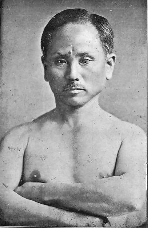

Les Origines du Style
Le Wadō-Ryū est considéré comme le tout premier style spécifiquement japonais de Karaté-Dō, par opposition aux styles traditionnels nés sur l'île d'Okinawa. Il est le fruit de la vision d'Hironori Ōtsuka (1892-1982).
Sa genèse est unique. Avant même de découvrir le karaté, Ōtsuka était déjà un grand maître de Ju-Jitsu traditionnel (le Shindō Yōshin-Ryū). En 1922, il rejoint l'enseignement de Gichin Funakoshi, le père du karaté moderne. Ōtsuka décide alors de fusionner la puissance percutante du karaté d'Okinawa avec les principes d'esquive, de fluidité et de projection des samouraïs. Le Wadō-Ryū était né.

空Maître d'Okinawa, il introduit le karaté au Japon. C'est auprès de lui qu'Ōtsuka apprend l'art de la « main vide » avant de tracer sa propre voie.
Chronologie
-
1892
Naissance à Shimodate (préfecture d'Ibaraki). Il débute le Ju-Jitsu dès l'enfance.
-
1921
Obtention du Menkyo Kaiden (maîtrise totale) du Shindō Yōshin-Ryū Ju-Jitsu.
-
1922
Rencontre Gichin Funakoshi et commence l'étude du karaté d'Okinawa.
-
1934
Fondation de sa propre voie et du Dai Nippon Karate Shinkō Kai.
-
1940
Le nom « Wadō-Ryū » est officiellement reconnu.
-
1982
Décès du fondateur. Son fils, Jirō Ōtsuka, perpétue la lignée familiale.